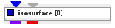

|
|
|

Maps volumetric data creating surface of constant data values.
| input port | type | description | data acceptors |
|---|---|---|---|
| inField | VNField | Input for data field to extract isosurface | Regular Field 3D 3-space at least one scalar component Irregular Field 3-space at least one scalar component at least one cellset containing 3D cells |
| threshold | Float | Input for isolevel value | |
| output port | type | description | data schemas |
| isosurfaceField | VNIrregularField | Output for surface field | Irregular Field 3-space 0 cell sets at least one cellset containing TRIANGLE cells |
| outObj | VNGeometryObject |
ISOSURFACE
An isosurface is a form of visualization for volume datasets, it represents points of a constant value in a 3D space.
Input data
At input the module requires either a regular 3D 3-space field with at least one scalar component or an irregular 3-space field with at least one scalar component and at least one cellset containing 3D cells.
Optionally the module has an input port for an isolevel float value.
Output data
At output the module delivers a surface field as an irregular 3-space field and a geometry object.
Computation tab

If wait button is on the module does not process data. Processing is continued if the button is set off. This possibility is useful for adjusting of parameters for big datasets.
Threshold component drop down list defines the component of the input field which is to be presented. By default, the first component of the list is used. In case of vector fields its norm is calculated.
For time dependent data the time slider allows to choose a moment of the evolution of the isosurface in time. Data between time steps are interpolated. If checkbox on the right hand side of the slider is on, the user is able to adjust time range and value entering the values in text boxes. For values below and above time range of input data the lowest and highest time step is used.
The single threshold slider enables the user to choose the isosurface value. If checkbox on the right hand side of the slider is on, the user may adjust range and value entering the values in text boxes. For values below and above minimum and maximum value of input data the lowest and highest value is used.
For big data sets data are downsized by default. The default downsize button downsizes input data, the no down button reverses downsize.
Presentation tab
Presentation tab contents are described in the common interfaces section unter the Presentation Panel entry.